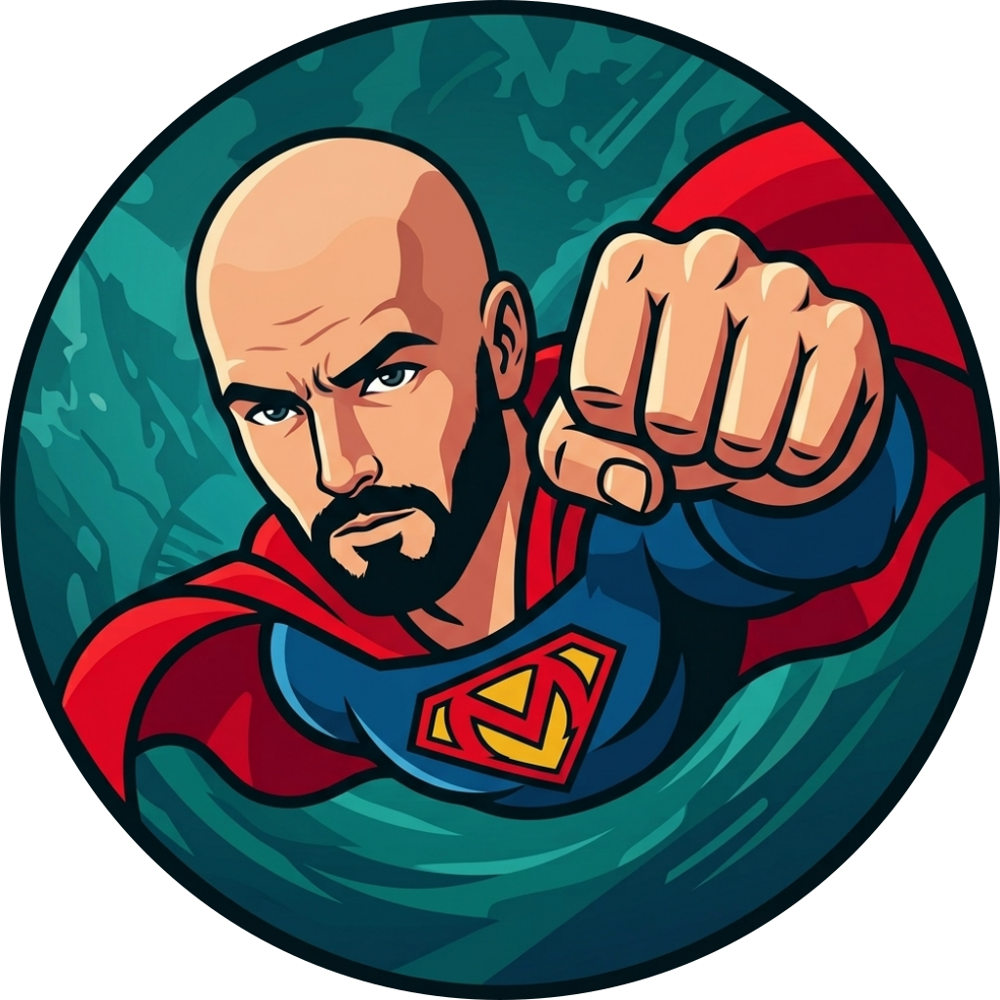

SuperMensPrivacy Policy
Last updated: October 1, 2026 · Developer: BBNSS
Android application: it.supermens.offline
SuperMens is an Android app for saving content and processing it with on-device AI. BBNSS does not operate a backend for your archive. The app does not require a SuperMens account or upload your archive to BBNSS.
Content stored on your device
SuperMens accesses content you choose to create, import or share: notes, links, documents, photos, audio and video. It stores extracted text, previews, retained attachments, summaries, questions and answers, together with source references and processing information. These are used to organize, search and process your archive.
Summaries, answers and image descriptions are generated locally. OCR and speech processing also run on the device. There is no remote AI inference endpoint operated by BBNSS.
Internet connections and service providers
Saving online content sends requests to the source websites and media providers to obtain text, captions and previews. Those providers can receive the requested URL or content identifier, your IP address and ordinary request metadata. Downloading the AI model contacts Hugging Face and its delivery infrastructure. If you configure the optional Invidious fallback, your chosen instance receives caption requests, including the video identifier and IP address. These providers handle requests under their own policies.
SuperMens uses Google ML Kit for OCR and supported speech recognition. Google states that input content and processing results stay on-device. The SDK can contact Google for updates and send diagnostics and usage information, including device and app details, identifiers, processing performance, configuration, input/output sizes, events, errors and configured speech languages. This information supports diagnostics, maintenance and usage analytics. See ML Kit Terms & Privacy, Google’s SDK data disclosure and Google’s Privacy Policy.
BBNSS has not added advertising, advertising tracking or an analytics dashboard. The Google SDK disclosures above still apply.
Permissions
Microphone access is requested for voice recordings and dictation. Notifications report downloads and processing progress. File access uses Android’s document picker and permissions for files you select. Photos are captured through your selected camera app. Internet access retrieves online sources, models and SDK resources. Permissions can be managed in Android settings; disabling them can limit the related features.
Sharing and exports
Copying text, sharing a post or exporting a backup happens at your request. Content is passed to the app or location you select, which may include a cloud storage provider. Their privacy practices then apply. Backups and shared files can contain your saved content and are not automatically password-encrypted by SuperMens.
Retention, deletion and security
Your archive remains on your device until you delete content or remove app data. You can delete individual posts in SuperMens or clear app storage or uninstall the app to remove its app-owned data. Original source files, exported backups, clipboard contents and copies shared elsewhere must be managed separately. BBNSS cannot access or remotely delete your local archive.
Android’s app storage protections restrict access to app-owned data. SuperMens does not provide separate archive encryption. Keep your device protected and store exports carefully. Third-party providers control retention of their own request logs and SDK diagnostics under their policies.
Contact and changes
For privacy questions, contact BBNSS through the SuperMens issue tracker. Issues are public: do not include personal documents, recordings, credentials or other sensitive information.
This policy may be updated as the app changes. The date above identifies the latest revision.